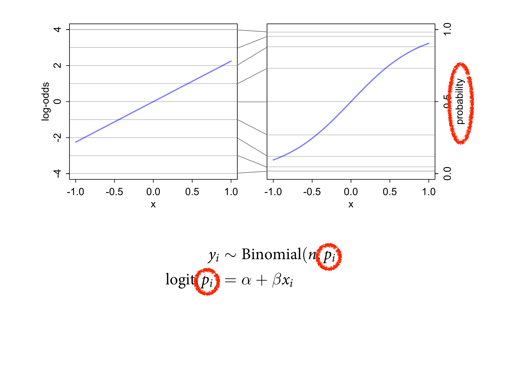

10.2 Generalized linear models
For an outcome variable that is continuous and far from any theoretical maximum or minimum, this sort of Gaussian model has maximum entropy. But when the outcome variable is either discrete or bounded, a Gaussian likelihood is not the most powerful choice.
Luckily, it’s easy to do better. By using all of our prior knowledge about the outcome variable, usually in the form of constraints on the possible values it can take, we can appeal to maximum entropy for the choice of distribution. Then all we have to do is generalize the linear regression strategy—replace a parameter describing the shape of the likelihood with a linear model—to probability distributions other than the Gaussian.
![Larger family of geocentric linear models. We want to connect a linear model to a mean to the distribution. Unreasonably effective given how geocentric it is. We pick an outcome distribution, then model the parameters using weird things called links, whcih link the distribution to some model. Can do all kinds of fancy things with the same basic strategy. Often if you don't want to play this game, when you write it down, it'll turn out to be a linear model anyway. In most cases, you probably want a GLM.](slides/L11/24.png)
Larger family of geocentric linear models. We want to connect a linear model to a mean to the distribution. Unreasonably effective given how geocentric it is. We pick an outcome distribution, then model the parameters using weird things called links, whcih link the distribution to some model. Can do all kinds of fancy things with the same basic strategy. Often if you don’t want to play this game, when you write it down, it’ll turn out to be a linear model anyway. In most cases, you probably want a GLM.
Instead of building linear models that look like this:
\[ y_i \sim Normal(\mu_i, \sigma) \\ \mu_i = \alpha + \beta x_i \]
Replacing a parameter describing the shape of the likelihood with a linear model looks like this:
\[ y_i \sim Binomial(n, p_i) \\ f(p_i) = \alpha + \beta(x_i - \bar{x}) \] The \(f\) is a link function, to be determined separately from the distribution.

Distributions arise from natural processes. And resist histomancy. This doesn’t make sense under any framework. You want to use knowledge of your constraints to figure it out. There’s no statistical framework where the aggregate outcomes is going to have any particular distribution.
Histomancy is a false god, because even perfectly good Gaussian variables may not look Gaussian when displayed as a histogram. Why? Because at most what a Gaussian likelihood assumes is not that the aggregated data look Gaussian, but rather that the residuals, after fitting the model, look Gaussian. So for example the combined histogram of male and female body weights is certainly not Gaussian. But it is (approximately) a mixture of Gaussian distributions. So after conditioning on sex, the residuals may be quite normal.
10.2.1. Meet the family
![Going to build GLMs with these different outcome distributions. Just an extension of what you've already been doing. Exponential is everyone's favourite because it only has 1 parameter. Lambda is a rate, and the mean is 1/lambda. Generatively it can arise from a machine with a number of parts. If one part breaks, the whole thing stops working. A fruit fly is the same. Bunch of parts inside the washing machine, and each part has a chance of breaking at a particular time, the waiting time until the washing machine stops is exponentially distributed.](slides/L11/26.png)
Going to build GLMs with these different outcome distributions. Just an extension of what you’ve already been doing. Exponential is everyone’s favourite because it only has 1 parameter. Lambda is a rate, and the mean is 1/lambda. Generatively it can arise from a machine with a number of parts. If one part breaks, the whole thing stops working. A fruit fly is the same. Bunch of parts inside the washing machine, and each part has a chance of breaking at a particular time, the waiting time until the washing machine stops is exponentially distributed.
Exponential: constrained to be 0 or positive. It is a fundamental distribution of distance and duration, kinds of measurements that represent displacement from some point of reference, either in time or space. If the probability of an event is constant in time or across space, then the distribution of events tends towards exponential.

If you count events arising from exponential distributions. Mortality rates of fruit flies is bionimal. Like coin flips. Each fly could or could not ascend. And the binomial is maxent.
Poisson. Two ways of thinking about it. If you have a binomially distributed variable, but the probabiity of success is low and there are lots of flies oserved over a long time.
Poisson
Practically, the Poisson distribution is used for counts that never get close to any theoretical maximum.

If you think about the time to the event of the exponential - how long did you wait until the washing machine broke, if you start adding up that time, those waiting times are distributed like Gamma. Also maxent. e.g. age of onset of cancer, perhaps because there are a lot of cellular defence mechanisms, and all of them need to fail.
Gamma: also constrained to be zero or positive. It too is a fundamental distribution of distance and duration. But unlike the exponential distribution, the gamma distribution can have a peak above zero. If an event can only happen after two or more exponentially distributed events happen, the resulting waiting times will be gamma distributed. Common in survival and event history analysis, as well as some contexts in which a continuous measurement is constrained to be positive.
If you get a Gamma with a really large mean, it converges to a Normal. But not the only way - all roads lead to normal. And it’s hard to leave. So these are generative processes, based on the constraints. Doesn’t mean that they’re correct, but it’s the betting part.
Tide prediction engine. When we get to GLMs, the metaphor is very potent. It’s a mechinical computer, and a part of it is the prediction of times, and then there’s messy stuff at the bottom that’s calculating the output. You’re absolutely wedded to the prediction perspective. Hard to have intuition about the parameters. You want to understand the prediction space, and you understand the parameters by observing their effects on prediction.
![Just need to think about before the data have arrived, you know things about the outcome variable. e.g. count variables are integers starting at 0, so there are no negative counts. So from the beginning you know things about them. That constrains the distributions before they arrive. Next week we'll move onto monsters because we glue together different models using links. Likhert scales are ordinal scales, but they're not numeric. What it takes to get from 1 to 2 might be different from what it takes to go from 2 to 3. Fight monsters by making monsters. Mixture models are super useful. Bear a lot of resemblance to multi-level models.](slides/L11/32.png)
Just need to think about before the data have arrived, you know things about the outcome variable. e.g. count variables are integers starting at 0, so there are no negative counts. So from the beginning you know things about them. That constrains the distributions before they arrive. Next week we’ll move onto monsters because we glue together different models using links. Likhert scales are ordinal scales, but they’re not numeric. What it takes to get from 1 to 2 might be different from what it takes to go from 2 to 3. Fight monsters by making monsters. Mixture models are super useful. Bear a lot of resemblance to multi-level models.
10.2.2. Linking linear models to distributions
To build a regression model from any of the exponential family distributions is just a matter of attaching one or more linear models to one or more of the parameters that describe the distribution’s shape. But as hinted at earlier, usually we require a link function to prevent mathematical accidents like negative distances or probability masses that exceed 1. (p. 316, emphasis in the original)

Consider the Gaussian linear regression. It’s super benign, and that’s because it has a special property: the scientific measurement units and the parameter for the mean are the same.

The much more typical case is the binomial model. If you want to connect a linear model to \(p\), it’s a probability. Probability is unitless. They’re divided out. But the outcome has counts. So now the units aren’t the same, and we need something that connects the parameter to the outcome scale. We need some function to put in where the question mark is so that it obeys physics.

We’re going to wrap \(p\) in some function which constraitns it. say there’s some function we can apply to the probability so that it’s linear in the outcome scale.

Searching is hearder. OLS can be used, but can be fragile. We’re just going to use MCMC because we don’t want to worry about it.
![One of the fun things is that suddenly all the varibles automatically interact with each others. Imagine you're trying to understand the habitat preferences of a reptile. If it gets really cold, probability of surivival is low, but hot they're fine. On the porobability scale, evenutally things get cold enough that you're dead no matter what. If any one varible will kill the lizxard, it doesn't matter what the other variables are doing. That's an interaction. No matter how much food you give it, it's going to die if it's really cold. You want your model to do this.](slides/L11/37.png)
One of the fun things is that suddenly all the varibles automatically interact with each others. Imagine you’re trying to understand the habitat preferences of a reptile. If it gets really cold, probability of surivival is low, but hot they’re fine. On the porobability scale, evenutally things get cold enough that you’re dead no matter what. If any one varible will kill the lizxard, it doesn’t matter what the other variables are doing. That’s an interaction. No matter how much food you give it, it’s going to die if it’s really cold. You want your model to do this.
If you like to think about the rate of change in a linear regression, you take a partial slope. Do this with any GLM, and the chain rule kicks in. And you get a much less nice expression. In a logistic regression, that’s the equation. If you take the partial derivative, you get this thing on the right. That’s the rate of change.

Let’s move into doing some good work. We’ll model some counts of events. What the Bionimal distriibution for? Counts of success out of trials. There’s some constant expected value condtioinal on a set of predictor variables. Under those conditions the maxent distribution is binomial.

The expected value is \(np\). Note the variance is related to the expected value. In general, the Guassian is the only distrubiton where the mean and the variance are independent. With all others, if the mean gets big, so does the variance.
So we’re going to plug a linear model and attach it to \(p\).
On the horizontal I have some predictor \(x\). What are the log odds? The log of \(p\).

If you do this, there’s a really nice mapping onto the probability scale, where x is linear on the log odds scale, and constrained to the (0,1) internval on the probability scale. This arises from the maxent derivation of the binomial distribution. In machine learning they call it the maxent classifier.
Logit means ‘log odds’. \(p\) is the probaility scale.



It really is just log odds. If you measure stuff in odds, you can measure things really well. Log odds are just the log of the odds. That’s linear. How do you get back to the linear scale? Solve for \(p\).
This is the conventional way to link, because it has lots of good mathematical properties.

For intuition, you want to relate the two scales. Horizontal is probability. Vertical is log-odds. Log odds 0 is equal chance. There’s this compression effect, so you need some scale. Log odds of -1 is 1/4. This is really important for defining priors.

We use this thing because its the natural link within the probability formula. It arises naturally in the derivation of the distribution. Big and legitimate links. If you have a scientific model, you can derive the link automatically.